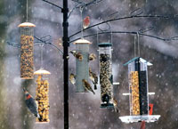
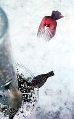
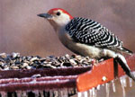

Mother's Nature
Whoever came up with the expression "eats like a bird" to describe someone with an eensy appetite never watched wild birds in winter. Although feathers do a fine job of insulating a small bird's body from cold, food is the fuel that stokes its inner fires, keeping its metabolism generating crucial heat and energy. From sunup to sundown, an overwintering bird's focus in life is to feed its face. Most small species need to eat from one-third to three-fourths their body weight in food each day. No gluttony here, though; the name of the game is survival, pure and simple. No food, no tomorrow.
Unfortunately, at the same time wintry weather forces birds to increase their caloric intake, it also reduces the pickings-meals become hard to find. Gone are summer's salad days, when tasty insects filled the air and leaves were acrawl with plump larvae. Fall's harvest of ripened seeds and berries has passed, too. What seeds remain are covered by snow or thinly scattered to the winds; ice coats tree buds and fruit.
Winter, in other words, is tough on birds. And this is where we humans come in-not only to the birds' benefit, but to ours as well. According to surveys, about one-third of adults feed backyard birds, doling out roughly 500,000 tons of commercial birdseed a year, along with countless quantities of suet cakes, seed logs and other treats.
We do it partially to help the birds, of course. Although most birds are able to forage successfully despite the bleak and bone-chilling conditions, mere beak-to-mouth survival does not an easy life make. Feeders enable birds to find food faster and more easily than searching for tiny weed seeds and bark-buried, semifrozen grubs. Less searching may also mean less risk of predation.
But the truth is, we feed birds to nourish our own winter-weary souls, too. Somehow watching birds flit from feeder to bush to branch, to feeder to bush to branch, lifts our spirits. Putting out feeders not only gives us a closer look at our feathered friends, but also gives us a greater sense of kinship with the creatures sharing our natural world.
Here are some ways to help you, your family and your backyard birds benefit more from winter bird feeding:
ADVERTISE
By the time winter rolls around, most birds already have regular feeding routes they established in summer and fall. In cold weather, they can't risk scouting for new sources. So if you're setting feeders out for the first time or putting one in a new location, you may need to "advertise" to attract bird customers and gain their confidence. Put out a temporary, open feeder first. Use a weathered piece of plywood or board, perhaps with furring strips tacked around the edges as a rim. Drill several holes for drainage. Put the "ad" in the open where birds will see it, but close to cover. It's best to set the board up off the ground-on a tree stump, for instance, or anchored to a limb.
Now sprinkle some birdseed and bits of white bread on the tray. Birds sometimes hesitate to try store-bought seed, but white bread (not wheat, not rye-only white) is a sure-fire lure. Of course it's also nutritionally hollow, so consider it strictly a grand-opening come-on.
You'll have to restock the tray every day or two because the food is exposed to rain, wind and four-legged critters-a disadvantage of using this kind of feeder long-term. Fortunately, within a week or so you should have plenty of regular customers. Then you can put out better (roofed, watertight) feeders filled with more nutritious food. Gradually cut back the rations on the tray (starting with the bread), and the birds will switch to the feeders.
WATCH THE WEATHER
All things considered, winter birds are amazingly resourceful, resilient survivors. Under most conditions they'll get along just fine without human intervention. This is not necessarily the case, however, in extremely harsh weather. Severe storms, bitter high winds, long periods of extreme cold and a host of other potentially deadly variables from Mother Nature can take a significant toll on bird populations. During these times, feeders may be their only reliable, accessible food sources. Try always to keep your feeders stocked, but make doubly sure during periods of sleet, ice, snow or serious cold.
Put fresh water out daily, too, when temperatures stay below freezing. If you have a birdbath, use a commercial birdbath-heating element to keep the water from icing. Or just make breaking any ice a morning ritual.
PRACTICE CROWD AND PEST CONTROL
To prevent overcrowding at your backyard diner while attracting as many kinds of birds as possible, offer a variety of seeds and treats in feeders located at different levels and spaced sufficiently to give all comers a place at the table. Be aware, however, that some birds will try to monopolize your feeders. If large species such as pigeons and blackbirds are scaring smaller songbirds away, use perchless hanging feeders that won't support the heavier callers. Or just toss bread or cracked corn on the ground away from other feeders, to give the bullies their own food.
Squirrels, of course, are infamous for their ability to get into bird feeders. To discourage them, avoid hanging your feeders from tree limbs and beneath eaves. Instead, mount feeders on individual poles at least 6 feet off the ground and beyond jumping distance (about 6 feet) from your roof or surrounding trees.
I f squirrels become a problem at a tree-mounted feeder, tack a 3-foot section of sheet metal around the trunk or branch. Or invest in a commercial squirrel-proof feeder. Most models are all-steel (squirrels easily chew through plastic) and feature a weighted perch mechanism that allows birds to dine but closes the food hopper when visited by fat, furry four-leggers. If all else fails, try putting feed out each day just 30 minutes before nightfall, when squirrels already are bedded down but many birds are still foraging.
Diseases such as salmonella can spread at bird feeders. Clean your feeders at least once a year-some experts say once a month is not too often. Use a stiff brush to scrub feeders thoroughly with a 10 percent bleach solution (one part bleach to nine parts warm water), then rinse them well and wipe them dry.
THINK NUTRITION
Not all birdseed is created equal, and not all birds like all birdseed. Supermarket mixtures are often heavy on low-nutrient, lowdemand seeds such as milo. Instead, buy individual types in bulk and mix your own. Or offer different kinds in different feeders.
Black oil-type sunflower and white proso millet will attract nearly all kinds of seed-eating backyard birds and are by far the most popular with the widest variety of species. Use them in most of your feeders, then add some variety with nutritious but more species-specific fare. Niger thistle appeals especially to pine siskins, goldfinches, and purple and house finches. Peanut kernels are ambrosia to the tufted titmouse. Jays and cardinals enjoy munching into black-stripe sunflower seeds. Cracked corn is a favorite of mourning doves, grackles and juncos.
SUET'LL DO IT
Most birds eat insects as well as seeds. In winter, suet (raw fat) serves as an important high-calorie substitute for summer's six-legged protein. Woodpeckers, flickers, chickadees and nuthatches are among the many species that benefit from it. Chunks of hard, unstringy beef suet are best. Just hang some outside in a plastic mesh bag or wire-mesh suet holder. It'll be eaten long before it spoils. Or if you prefer, pack softened suet into pine or hemlock cones and tie the cones to tree branches. Or better yet, stuff the cones with this high-fat, high-protein recipe: Combine 2 cups of warm, melted suet with 1 cup each of yellow cornmeal and peanut butter. Cool, stuff and serve.
DON'T FORGET THE GRIT
Grit is essential in most birds' diets, both as an aid to digestion and as a source of minerals. Birds usually get all they need from sand, tiny pebbles and such, but snow cover can make grit tough to find. (That's why you sometimes see birds in winter pecking at asphalt roof shingles.) To help, put out a small dish of coarse sand-preferably seashore sand, which contains calcium-rich shell and high-mineral quartz. Chicken egg shells, dried and crushed, also are a good source of grit and calcium. Add them to whatever birdseed or suet mixtures you use.
OFFER TREATS, TOO
Birds needn't live by birdseed alone. Offer treats occasionally, too. Crackers, doughnuts, raisin bread, cooked sweet potato, baked beans, dry pet chow and cut pieces of fruit-apples, bananas, pears, plums-are popular snacks at backyard feeders. Grape and apple jellies are favored by overwintering warblers and make good cold-weather food because they don't freeze. Coconut meat is a favorite of woodpeckers, chickadees and titmice. Just crack open a nut and hang the pieces from branches. (Don't serve dry shredded coconut, because it swells after being swallowed. And straight peanut butter can be too sticky for small species to manage.)
PLANT LIVING FEEDERS
Feeding birds commercial birdseed helps them through harsh winter conditions, but it's no substitute for improving backyard habitat. In spring and fall, plant a variety of trees, shrubs and other vegetation that not only serve up food such as buds and berries but also provide shelter and nesting sites. Holly, winterberry, cotoneaster and many other food-bearers yield nutritious fare that's more appealing to a wider variety of birds than commercial food. Nurseries and garden centers can help you choose the "living bird feeders" that grow best in your area.
ENJOY THE SHOW
Hey, winter's a tough time for humans, too. Fortunately, we have our feathered friends to help. Watching their cheerful antics as they come and go at your feeders definitely puts a brighter face on the season. Be sure to take time each day to snuggle up in a cozy chair near a window and enjoy the show.
Mother Earth News
|
 A male northern cardinal on the approach to a backyard winter lunch. |
 A male red-bellied woodpecker enjoys sunflower seeds. |
 |